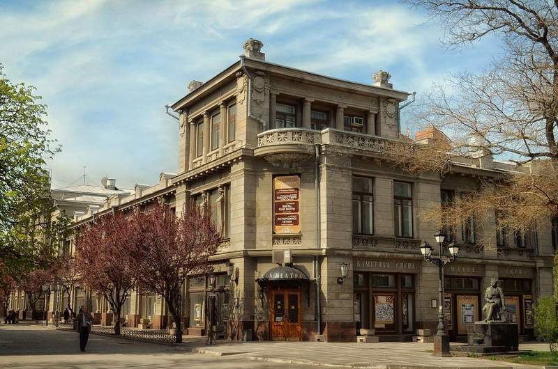

|  |
История театраТеатр является одним из старейших театров юга России. Основан в 1821 московским купцом Волковым.Театр поменял много названий, например, он был Симферопольским Дворянским, то Театром Таврического Дворянства, то 1-м Советским театром, а затем еще сменил пару десятков названий. Во время Великой Отечественной Войны группа подпольщиков - актеров и работников театра - были раскрыты за три дня до освобождения Симферополя. С тех пор ежегодно в театре проходит постановка драматического спектакля, основанного на реальных событиях, о подвиге работников театра и их расстреле. |